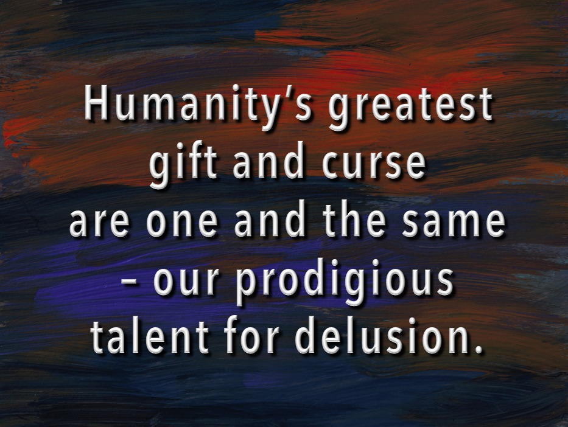

The Griffith Review has just published a substantial essay of mine that I've been working on for some time. I reproduce the introductory section below after which you'll have to hightail it to their website to finish. But it would be good to see you back here for comments which aren't provided for on the Griffith Review website.

Designing institutions to force (or nudge) entirely self-interested individuals to achieve better outcomes has been the major goal posited by policy analysts for governments to accomplish for much of the past half century. Extensive empirical research leads me to argue that instead, a core goal of public policy should be to facilitate the development of institutions that bring out the best in humans.
Elinor Ostrom, Nobel Lecture, 2009
SINCE ADAM SMITH, economists have marvelled at competition’s capacity to improve our world – not by fostering virtue, but by harnessing the opposing self-interest of buyer and seller in a market. As Smith himself famously suggested, instead of trusting his wellbeing as a consumer to the benevolence of the butcher, baker or brewer, he’d rather rely on their regard for their own interests in competing for his custom.
There’s a lively debate today about how to inject greater competition into Australia’s notoriously oligopolistic industries – like finance, supermarkets, fuel, energy and telecommunications – not to mention our new global digital overlords like Facebook and Google. And there’s a more ideologically charged debate about whether competition will drive better or worse outcomes in sectors where non-market values are important – like health, education and social services.
Having offered some thoughts on those issues elsewhere, in this essay I discuss something more fundamental and, because of that, widely overlooked. We’re falling for the ‘competition delusion’ by which I mean this: In our embrace of private competition as a goal, we mostly pass over a prior issue – which is the terms on which that competition takes place. That’s undermining trust in a remarkably wide range of institutions in our economic and public life.
The analogy with sport is illuminating. Australian Rules football is the crucible of some of the most intense competition you can imagine. But unlike some thinkers about our economy and society, its administrators understand that competition won’t amount to a hill of beans unless the rules of the game make it the game we want to follow. Seeing things this way, it’s an obvious mistake to ask whether football should be competitive or cooperative. Competition and cooperation are inextricably entangled in the game, each defining the other.
The competition delusion sees competition and cooperation as two ends of an ideological spectrum. And it presumes that, where one has to choose, competition should be presumed preferable to cooperation. The perspective I’m sketching here suggests a new take on JK Galbraith’s argument about private affluence amidst public squalor. As he put it in 1958:
Cars are important, roads are not… Vacuum cleaners to ensure clean houses boost our standard of living, street cleaners are an unfortunate expense. Thus we end up with clean houses and filthy streets.
Whatever the validity of this critique of America’s real economy of the 1950s, it’s a remarkably and increasingly apt picture of the knowledge and ideas that govern our economy and society in the age of the competition delusion. OUR LEGAL SYSTEM illustrates the issues. CONTINUED AT THE GRIFFITH REVIEW Podcast at this link.
Hi Nick,
you know I broadly agree with this line of thought, using a few different words.
But I do think the impetus for the illusion comes from a different place and from a different motivation: the motivation is for the winners in our society to claim they are virtuous and have deserved their winnings. And the competition story fits that bill. Its the 'best' football players that get payed the most, just as it is the 'best' others that supposedly 'win', even if what they win at is corruption.
So much in our society is oriented towards making those who have stolen from the many feel good about themselves and telling others they too should be like that, or even that are actually are like that. I think the tenacity with which a whole layer hangs on to the obviously idiotic story that markets are just about competition is that it fits their individual private wish to be deserving. It's not a stupidity, its simple self-interest, a much more powerful beast you are trying to slay.
Thanks Paul,
As you probably know, I don't disagree with your perspective, but I don't think it's a response to my essay which is at pains to insist that it's not about competition versus cooperation.
You are probably right that there's another competition delusion which is the one that tells those who win the competition that it was fair and they deserve their spoils.
But lawyers don't tell themselves that the adversary system is a better system of law from the motives you attribute to them – except in the most diluted way. If you proposed to them what I'm suggesting (in that regard broadly the civil law system of legal procedure) they'd probably oppose it. Some might even realise that it meant lower incomes for them. But most would oppose it from the more innocent motives of intellectual sloth and it-didn't-do-me-any-harmism.
Ditto auditors, financiers etc.
It's remarkable – to me anyway – how so many of the economists who have now read the piece think it just must be about debates it reminds them of, even though it's not about them. Rabee T on Twitter comments that I can't find now said it was all about the role of government and another British Economist says my essay hasn't taken into account state capacity. All interesting arguments, but not the issue I was focused on.
> back here for comments
:) I've just been booted from The Conversation for reasons unknown, but it's likely related to a "report this comment" troll visiting a thread I was posting in. Again.
I think your point about "but who creates the market for market creators" is valid, BTW. And I suggest the devaluing of expertise has extended to parliament as well.
You might perhaps extend your discussion the to widespread outsourcing of Australia law to "private arbitration in the state of California", which even our own government requires us to use via their use of various google properties for submissions on proposed legislation (one example, there are doubtless more). I mean, they have obviously bought the best advice possible on the consequences, but that perhaps reinforces your point about the inanity of adversarial systems "I recommend my client not use the system in which I have expertise".
Also, I fear you're deluded about the usefulness of Yelp and TripAdvisor. Both are heavily gamed and indeed could be likened more to mob operations than honest reviews "nice business you got, be a shame if my users destroyed your reputation. Now on a completely separate note{wink}, would you like to buy some advertising?"
it is about your post, Nick, ie about it is both your use of the word of the word delusion and about why I think the competition story is so hardy. I think 'ruse' is a better fit. 'Delusion' has the notion of a mere stupidity. I am saying its a very convenient myth that has staying power because it keeps giving. People can have delusions of grandeur, but they have group myths for a real purpose, which is to justify and protect their patch. By using the word competition delusion you take away from your competition/cooperation message (which allows a role for competition, which will confuse people) and you make it a "you are deluded" thing, which is not quite what you mean.
So yes, there is also sloth but I think the sloth bit is dwarfed by the ruse motive.
The disconnect between the legal system and justice was thrown into harsh relief by the "alien" case this week. Apparently it's perfectly reasonable for a high court justice to state that bluntly:
Never more perfectly poignant are the words of Gageler J when he said in his dissenting judgment at para 128, ‘Morally and emotionally engaging as the plaintiffs’ argument is, the argument is not legally sustainable.’
From https://indigenousx.com.au/high-court-and-the-question-of-aliens/
OK – understood.
I'm happy with the word 'delusion' for my purposes – which is to say I think it's an accurate word, but it's also used for 'cut-through' purposes so I wouldn't change it, but I understand your point a little better now.
(And there's nothing wrong with thinking of competition and cooperation as opposites – they are. But outside of war they are opposites in a context and that context is one of cooperation.)
I find TripAdvisor very helpful and use it all the time.
I also know that because of that very fact it will be gamed, and that TripAdvisor won't be able to do a perfect job of policing it. Judging from TripAdvisor's interface, it doesn't try that hard. It's more interested in keeping the business churning out cash, which requires it to make itself useful, rather than make itself outstanding.
Nicholas “Designing institutions to force (or nudge) entirely self-interested individuals to achieve better outcomes ” Nudge-force aimed at individuals has become is so ubiquitous and the same time the quality of virtue has all but disappeared from so many of the institutions that seek or have the power to Nudge us. That well could be all you need by the way of explanation of the roots of the deep individual anger- disaffection that has powered many of the populist variations on ’drain the swamp’ - hypocrites and vipers .
The big deal is getting prices right. Under the ideal conditions, competition does this. But, if prices are wrong, the fact that they have been produced by a competitive process doesn't matter.
Nicholas
Bellow is a quote from a review of Steven J Pyne's book "Still Burning Bush" .
Pyne's thoughts seem relevant to your theme:
"Though "Australia is among the world's firepowers", Pyne sees problems in the response to the threat in this country that would be easier to solve if there was a more straightforward approach to fire: "The country seems locked into a polarised politics of identity for which conflagrations provide a dramatic backdrop." Fire never changes, but as the Australian nation has developed, the official response to fire has become more and more complex and diffuse.
The solution to the problems caused by the increased sophistication of our society, writes Pyne, is to make the chain of responsibility more democratic and accountable. The government agencies that deal with fire should not be at cross-purposes.
"When technocrats or scientifically informed bureaus have aggrandised that job to themselves in the name of depoliticising it, the outcomes have failed because they were in truth doing politics by another name," Pyne argues. "The issue is not whether politics should be present, but that the politics be fair, informed, and open." "
Thanks John,
That seems like a very reductive view – worthy of your discipline ;)
I think I can see counterexamples. It's possible to imagine markets with monopolistic margins (and therefore which generate substantial price distortions) nevertheless being something close to as good as they can be made. I suspect the market for super-airliners is probably like that.
More importantly, a major part of my argument is directed to the ethical dimensions of practice. The only way to reduce this to price would be to define price, and in particular externalities, in such a fastidious way that it's a bit like those moves which prove that everyone always acts with selfish motives it's just that some have 'altruism' in their preference set or whatever gobbledygook is preferred at the time.
But in the "superairliner" case, the price would be too high, and too few would be produced and sold, relative to the social optimum This is the standard case for public monopolies (against which there are standard counterarguments of course).
Having said that, I agree entirely with what I take to be your central point. Competition is, in large measure, a necessary evil, not a good in itself. We would be a better society with a mixture of co-operation and emulation, allowing competition where it was needed.
Actually John, as I try to make clear in the second paragraph, that's not my point. That's others' point and that's the way the debate on competition is usually held. I'm saying there's a prior consideration which can't be reduced to the idea that competition and cooperation are opposing forces or options – they mutually constitute each other and the question is the terms on which that constitution takes place.
I would like to question Nick on the statement in his Essay that states: “Second, a prominent theme of micro-economic reform should be to minimise the tension between the pursuit of internal and external goods in our institutions and practices wherever possible.” This is because at least some tension is required to establish a universal phenomenal of nature described by Bucky Fuller as “Tensional integrity” or “Tensegrity”. Harvard biologist Donald Ingber describes Tensegrity as “The architecture of life”. Neuroscientists David Engstrom and Scott Kelso introduced the tilde sign ~ to identify Tensegrity or what they described as Complementary ~ Contrary human behaviour. Examples being Cooperative ~ competitive, Selfish ~ Altruistic, Suspicious ~ trusting, Fight ~ flight, etc. Tensegrity is hard wired in social animals by their DNA to prove all five models of the “The Nature of Man” posited by Mike Jensen and Bill Meckling in 1994 are mostly wrong. Tensegrity drives evolution. Micro-economic reform that minimises tensions would create stodgy bureaucracies. It is Tensegrity that allows the “polycentric compound republics” identified by Ostrom to avoid “The tragedy of the Commons” without markets or hierarchy. The emergence of Tensegrity in bottom up stakeholder governed firms helps to explain their success that produced a “Dilemma” for Williamson. A fundamental problem is that no graduate school of business, management or government teaches how to design polycentric republics that are found in bottom up stakeholder governed firms like The John Lewis Partnership in the UK, Visa Inc. in the US or the Mondragón cooperatives in Spain. Many of the problems Nick identifies in his Essay mostly disappear if tensegrity is introduced into social institutions. This is because Tensegrity replaces the need for either markets or hierarchy to further the common good.
Thanks Shann
I personally doubt we have a case of a disagreement here. At least in my way of discussing such things, the intention of statements should be read sympathetically with their context. I offered my statement as a general principle, not as an immutable cosmic law. So if there are exceptions to it, then that is something interesting that I'd be interested to know about.
But in that case, to understand the point you're making I need some context, and some concrete examples. I'm afraid you've presented 'Tensegrity' in a very abstract way and I have no idea what it is. I am familiar with Ostrom. You quote her as if her work stood for some principal that is somehow superior the one I've suggested in some way. I think she'd approve of what I've said, but I can't prove that.
Her own researches don't say all that much. As you say, she showed how there are various arrangements that avoid the tragedy of the commons that aren't markets or unitarily hierarchical. She also inducts from her empirical work some principles which bear on whether they'll function well or not. I don’t think anything I've said is antithetical to anything she's said in that regard.
Ah, Nicholas, I hadn’t read this post when I responded to your resuscitation of the thread at
http://clubtroppo.lateraleconomics.com.au/2018/07/14/paul-krugman-nobel-prize-or-academy-award-when-economic-theory-is-a-tower-of-babel/#comment-647275
There I harp about competition, coercion and cooperation and now I find you have a relevant current post here. I have much to say.
Yes, football works because it has rules but it does not follow that “...it is an obvious mistake to ask whether football should be competitive or cooperative.”
Rules have nothing to do with cooperation. Rules say, “Do this or else.” You will stop at a red light. You will approach the king on your belly. Cooperation plays no role. (Nor does competition.) Rules may or may not be made by cooperative—or competitive—discussion in some committee, but the rules will be obeyed.
Football also requires cooperation—people have to want to play it and to watch it—but what you are talking about is coercion. Words have flavour. Cooperation is thought nice; competition is neutral; coercion is seen as nasty and that may explain why it is under-theorised. Way under-theorised. These flavours bias our thinking. As your football example proves, coercion is a social necessity; we don’t like to say the umpire coerces the players but that is what happens. It takes some shine off cooperation to include in it collusion and conspiracy. The mindset that endorses competition is sharply aware of this and (ostensible) competitors who have been found to cooperate have on occasion been heavily fined.
Rules can be obeyed willingly (in recognition of their necessity) or unwillingly (considered an imposition). For example, it is 2am, not another car in sight, the damned light won’t go green; you are fuming but dare not drive because the camera will get you. Alternatively, meeting the king is proudest day of your life, an inspiration you will boast of till the day you die. Willing or unwilling is immaterial.
Rules mediate, coercively, competition and cooperation. You must only compete within the rules; if you refuse to cooperate, the coercion will be worse. Nevertheless, as those examples show, coercion (prescription, regulation, compulsion...) is a mode of social relations independent of competition and cooperation.
You object to seeing competition and cooperation as two ends of an ideological spectrum. I agree. Though they often conflict, both can be low and both can be high. If both are low then coercion will dominate. Where both competition and cooperation are high (e.g., football), coercion (rules) is also high to resolve the conflicts between them.
Rules must be enforced. That requires a hierarchy of properly qualified enforcers. Hierarchy combines the three modes: you compete with your peers, coerce your subordinates and cooperate with your superior. The football umpire competes with other umpires for promotion to a higher league, coerces the players, and cooperates with some committee and the rule book. Where coercion alone obtains (i.e., without competition or cooperation) there is no hierarchy: think of the bank robber or merely of fire, flood and famine.
“competition and cooperation ... mutually constitute each another...” They cannot. Though they may often be found together, each can exist on its own. This is the point of theory (to reference that other thread): to find the parts and determine their interrelationships. Competition, coercion and cooperation are interrelated, like the parts of an engine or an ecology. But the parts are separate and distinct and the task of theory is identify them and work out how they interrelate to constitute the whole (not each other).
Three modes of social relations. Biological nature is driven by competition so competition is prior. Coercion and cooperation serve competition. Organisms coerce others in order to better compete. Social creatures coperate in groups in order to better compete.
Three more remarks:
1. As football (and war) demonstrates, young people love to put themselves into coercive situations. It is the path to promotion and as with parental authority, it lets the more competent take responsibility.
2. There are three kind of courts. English adversarial court system is competitive and the European (Roman) inquisitorial system is coercive. There is also a cooperative system known as “restorative justice” which involves perp and victim meeting and talking it over with a view to forgiveness. Restorative justice is widely used for young offenders.
3. Finally, I see a contradiction with the word “institution” in the Ostrom epigraph and in the MacIntyre quote referenced xi. I did like MacIntyre’s three virtues: courage, justice and honesty. Courage is characteristic of competition where you take risks to win; justice is always achieved through coercion and coercive institutions; and honesty, as confession and exposé, is most prominent with the cooperative mindset.
Thanks Mike
Hmm,
Interesting. I'm averse to your style of reasoning, but it may be better than mine, who knows?
I'd say your style is 'atomistic' and 'foundational'. You think there are essences like competition and cooperation and coercion. I see these things as being in an ecology with each other mutually defining each other.
You say "Biological nature is driven by competition so competition is prior". I don't really get that. Biology doesn't exist except for the cooperation within the organism. Organisms can then compete – they can also cooperate. But I'm not really trying to find a new foundation and say it's 'cooperation'. They seem to mutually define each other.
I'm also not thinking that these ideas are any things on their own. They're just ideas. So they're tested by what they can produce. The ideas in my piece were intended to help illuminate certain issues in the world, including the ones I tried to address in the piece.
Can you illustrate how your ideas help you gain insight into something that's more concrete than the ideas themselves?
Essences. Yep. Because that is how scientific understanding works; that is the nature of the sort of knowledge which has shaped the world in recent centuries. Plato’s forms, Aristotle’s essences, Weber’s “Idealtyp”—all getting at something which both Galileo and Newton wrote about and which is better termed idealisation. For example, the gravity formula says force equals mass1 times mass2 divided by distance squared. Where does it apply? It applies to perfectly spherical bodies of perfectly uniform density not influenced by any other forces. Those conditions never obtain in reality.
That’s theory; as far as I know, idealisation is universal in science: a theory is an idealised relationship between idealised concepts. Economics theory, too. Theory describes the essence, the relational situation in terms of extremes, as if reality were pure, perfect, one thing at a time, not messy and multitasking. Economics is much criticised for being unrealistic but its idealisation is a major cause of its superstar status among the social sciences.
Why don’t the other social sciences do theory like this? Given the success of economics and of the hard sciences, you’d think it would be the standard approach. It’s not done at all and presumably the reason is that the process of idealisation and relationships isn’t clear. Social scientists do know they should look for relationships but they think relationships are numerical, about correlations of counted phenomena, as if you could work out the theory of gravity by correlating the number of tides with the number of falling apples. This statistics mania has gone on ever since computers made it easy. It has failed. Yet that doesn’t stop it. On the contrary, the ranks of those social scientists are augmented by economists with strong statistics skills who have run out of things to do in economics.
Coercion and cooperation serve competition. Cooperation within the organism? That’s not really the present meaning of the word for cooperation usually implies there is a choice of not cooperating whereas organs and molecules just do what they do. We don’t normally say the fan belt cooperates with the water pump. A single cell is a mind-boggling factory of molecular “cooperation.” It still serves competition for the purpose of the molecules “cooperating” is to provide competitive advantage to the organism. Crudely: if one organism begets more grand-offspring than its brothers and sisters then that organism has better competed and its particular form of internal “cooperation” will increase in the gene pool.
As an aside, I also don’t regard the bees and the flowers as cooperating. Again, it doesn’t much matter for Darwin tells us that an organism’s behaviour, whatever it is, is to promote the spread of that organism’s genes—and that’s a competition. There is a great deal of inter-species symbiosis but it is not really what we are talking about. What we are on about is intra-species cooperation which mostly applies to social animals.
You can have competition without sociality but you can’t have coercion or cooperation without sociality. Competition antedates sociality by billions of years. Still today, the vast majority of organisms compete with their own kind without any coercion or cooperation. Some might say that asocial predators “coerce” prey, but that again extends the word. It is inter-species and as far as the prey is concerned predators are a part of the environment to be adapted to.
Have I established that competition is prior? We compete with our fellow humans (economic theory says that is all we do) and we coerce them and cooperate with them. The dictator coerces his enemies—in order to compete with fellow brutes. The farmer joins a coop—in order to better compete against other farmers. Those are social situations and they are not, in practice, pure coercion or pure cooperation because the dictator will need some cooperation to succeed and the farmer must obey the coop’s rules. Competition, though, is different. Competition we can do pure and clean. Think of a job application, where you don’t have any coercive or cooperative connection to your competitors; indeed you don’t even know if they exist.
Economics assumes competition for good reason but it is exhausted. What I was suggesting in the other thread was that economists extend their theorising to coercion and cooperation. This is not a tweak as Paul put it. This is an add-on, or rather two add-ons. I imagine assuming coercion and then theorising something analogous to supply and demand curves. Or assuming cooperation and working out its theoretical economic consequences, not from a perspective of a disturbance to, or corruption of, competition but as a theory for itself. I can’t see economics breaking out of its stagnation (which Paul says has prevailed since the 1950s) until it does this. Coercion and cooperation exist, they are independent and they affect the economy. They need to be somehow theoretically recognised.
Insights? Well that was one: coercion and cooperation serve competition. Or try this for an insight: all over the democratic world we recognise political left and right. The left is cooperation. The right is an uneasy combination (usually in formal coalition) of competition and coercion in the form of the free marketeers and the traditionalist conservatives. Three modes of political relations: the dries, the wets and the left. Everywhere.
I say the three modes capture the entirety of rational social intercourse—i.e., excluding the purely personal or emotional. Supporting this claim is that long list of triples corresponding to comp, coerce and coop on the other thread. A lot of brainy, learned people have seen the three in a variety of contexts. (A curious thing: if you read through the list you will notice that they name them in the order comp-coerce-coop in nearly all cases.) There, impromptu, I added the three legal court styles and MacIntyre’s three virtues. What’s going on here? A coincidence?
I will see if I can think of more insights.
Thanks Mike,
These don't pass the test of insight for me – I want something useful. The problem with the insights you provide is that they're internally referential.
This is a major problem in the social sciences because systems that pose as providing insights into the way the world is, often flip into a justificatory state where they are used to justify 'ought' statements.
The person promoting the framework or 'paradigm' is saying 'you ought' to look at things this way. Maybe so, but that doesn't help me make some system better for human life. That's what I mean by 'insights'. Practical insights that can help us make the world better.
That's what I'm claiming for my article. A bit of theoretical fancy footwork about the public goods of competition and the ethics of practice cashing out as a bunch of ideas about how to improve the world.
Two claimed insights that come to mind, in this case, can be reduced to the propositions that
1) we should build institutions that minimise the tension between the internal and external goods of practice.
2) the 'standards' that set the terms of competition, should reflect the needs of users not producers.
Perhaps the evils you see in promoting a “system” or a “paradigm” or a “framework” do occur. But surely you are not accusing the standard science theory approach of such sins? What you are calling insights I would call policy proposals. Theory can’t deliver anything normative. Atomic theory cannot tell you whether to build bombs or power stations. You want to “improve the world;” theory is to understand it. As I think I showed, your logic was faulty so inasmuch as your proposals (“insights”) follow, they will be flawed. The reason your logic went wrong is lack of theory. You are, of course, free to show I was mistaken. Though the insights of theory aren’t policy they are nevertheless essential. Governments have various policies regarding the corona virus but there is a world-wide effort to try to understand it; they know they can’t fully counteract it until they understand it. As to your two proposals, the first I do not really understand but the second is plain and I think regular readers of this blog would agree that it would be unlikely for Nicholas Gruen to make the opposite suggestion. Other economists might, but not you. If so—i.e., if you never were going to conclude the opposite—then your essay must be written to support, not derive, that conclusion. Normative decisions can’t be derived from theory but if you try to build either a bomb or a power station without theory the result will be costly confusion—pretty much the situation with public policy. A social theory would explain why some people want this and others want that. It would be a “theory of tastes” in economists’ terms and it would also explain our ability to predict each other’s tastes. Theory won’t say which policy to adopt but it would facilitate rational, effective policy making. I think it pretty obvious that for economic theory to get out of its rut, it must theorise society, not only individuals maximising wealth. My suggestion, for which I have presented quite a bit of supporting evidence, is that the key to theorising society is through theorising coercion and cooperation in the same way competition is theorised. Since that hasn’t even started, insights leading to policy proposals are a million miles away.
Thanks Mike,
We have a complete difference of sensibility here. Which means it's very hard for each to get through to the other. A further problem is that I'm fairly confident I understand your sensibility, and have moved beyond it. As a social move, this might seem arrogant. And it may be – apologies for that. But I'm just acknowledging the issue. I may be wrong.
I think you think I'm just confused. Well I am, but I think you are too ;)
We could go on talking like this till the cows come home. I've thought quite a lot about that strict normative/positive distinction that resides in a lot of what you write and underpins your last comment.
I prescribe a course of reading Nancy Cartwright and Mary Midgley and call me if there's any change. It's not a coincidence they're both women.
And one of the common threads running through the work of both is the effort necessary to escape from Cartesian metaphysics.
In any event, I've written quite a bit about all this in a long unpublished – and unfinished essay. I'm now going to grab a bit of that essay that discusses the positive/normative distinction and pop it up on Troppo.
Btw, I have spent a couple of hours 'popping' up a bit of my essay to Troppo and I'm still not finished, but I will get it up there soon – I promise.
The first half of the essay is now up.
As is the second part – at the same link.
It occurred to me today how relevant this post of Carolyn Sissoko is to the question of how to regulate against Gresham's Law taking hold of markets for information.
One way to understand Google, Amazon, and Facebook is that they are acting as dealers in a broader economic marketplace. That with their superior knowledge about supply and demand they have an ability to extract gains that is perfectly analogous to dealers in financial markets.
Given this framing, it’s worth revisiting one of the most effective ways of regulating financial markets: a simple, but strict, application of a branch of common law, the law of agency was applied to the regulation of the London Stock Exchange from the mid-1800s through the 1986 “Big Bang.” It was remarkably effective at both controlling conflicts of interest and producing stable prices, but post World War II was overshadowed and eclipsed by the conflict-of-interest-dominated U.S. markets. In the “Big Bang” British markets embraced the conflicted financial markets model — posing a regulatory challenge which was recognized at the time (see Christopher McMahon 1985), but was never really addressed.
The basic principles of traditional common law market regulation are as follows. When a consumer seeks to trade in a market, the consumer is presumed to be uninformed and to need the help of an agent. Thus, access to the market is through agents, called brokers. Because a broker is a consumer’s agent, the broker cannot trade directly with the consumer. Trading directly with the consumer would mean that the broker’s interests are directly adverse to those of the consumer, and this conflict of interest is viewed by the law as interfering with the broker’s ability to act an agent. (Such conflicts can be waived by the consumer, but in early 20th century British financial markets were generally not waived.)
A broker’s job is to help the consumer find the best terms offered by a dealer. Because dealers buy and sell, they are prohibited from acting as the agents of the consumers — and in general prohibited from interacting with them directly at all. Brokers force dealers to offer their clients good deals by demanding two-sided quotes and only after learning both the bid and the ask, revealing whether their client’s order is a buy or a sell. Brokers also typically get bids from different dealers to make sure that the the prices on offer are competitive.
Brokers and dealers are strictly prohibited from belonging to the same firm or otherwise working in concert. The validity of the price setting mechanism is based on the bright line drawn between the different functions of brokers and of dealers.
Note that this system was never used in the U.S., where the law of agency with respect to financial markets was interpreted very differently, and where financial markets were beset by conflicts of interest from their earliest origins. Thus, it was in the U.S. that the fixed fees paid to brokers were first criticized as anti-competitive and eventually eliminated. In Britain the elimination of fixed fees reduced the costs faced by large traders, but not those faced by small traders (Sissoko 2017). By adversely affecting the quality of the price setting mechanism, the actual costs to traders of eliminating the structured broker-dealer interaction was hidden. We now have markets beset by “flash-crashes,” “whales,” cancelled orders, 2-tier data services, etc. In short, our market structure instead of being designed to control information asymmetry, is extremely permissive of the exploitation of information asymmetry.
The rest of the post is of interest also in considering the vexed question of the data privileges of the new digital oligarchs.
Note to self: With each jurisdiction benefiting from spinning things their way, carbon offsets are suffering from system decay. #MoralHazard
I suspect Gresham's Law applies to the arts, and to government. Where the arts are allowed to be debased for profit, they will be. We have, in Whitlam's words, "the grovelling to every mindless fad and the systematic debasement of public taste". Where the public interest is whittled away for profit, we end up with plutocracy: government that is a mere by-product of private greed.
Looking up the Christopher McMahon 1985 reference in the text above we find this:
This is a profound point often lost in policy discussion.
As Martin Wolf points out, ratings agencies are another example of the conflicted provision of a public good. "Seventh, radically improve the quality of information available. Particularly important is a change in payment of rating agencies. Since these provide a public good, they must be funded by a general levy"
Shooting the Messenger? Supply and Demand in Markets for Willful Ignorance
Tinbergen Institute Discussion Paper 2019-071/I
48 Pages Posted: 15 Oct 2019Shaul Shalvi
University of Amsterdam - Amsterdam School of Economics (ASE)
Ivan Soraperra
University of Amsterdam - Center for Research in Experimental Economics and Political Decision-Making (CREED)
Joel J. van der Weele
University of Amsterdam - Center for Experimental Economics and political Decision making (CREED); Tinbergen Institute; Center for Financial Studies (CFS)
Marie Claire Villeval
GATE - CNRS; IZA Institute of Labor Economics Date Written: October 2, 2019
Abstract
We investigate the role of advisers in the transmission of ethically relevant information, a critical aspect of executive decision making in organizations. In our laboratory experiment, advisers are informed about the negative externalities associated with the decision-maker's choices and compete with other advisers. We find that advisers suppress about a quarter of "inconvenient'' information. Suppression is not strategic, but based on the advisers' own preferences in the ethical dilemma. On the demand side, a substantial minority of decision makers avoid advisers who transmit inconvenient information (they "shoot the messenger"). Overall, by facilitating assortative matching, a competitive market for advisers efficiently caters to the demand for both information and information avoidance. Decision-makers are less likely to implement their preferred option when they are randomly matched to advisers and there is no scope for assortative matching.
I'm forced to write something here when I'm just trying to upload the pic
Adam Smith deliberating on issues germane to the post:
Smith, 1763 [1978]: 538–539)
What happens to this self-correcting mechanism when it is flooded by professionally crafted bullshit and lies about who is cheating and who is not?.
Smith is talking mostly about deals with the baker, the brewer, and the butcher.
Professionals are another kettle of fish.
As Michael Polanyi made clear when speaking about science.
Actually, one of the best ways of boosting one's citation index (from the hail of conservative criticism) is to mount a strident and direct attack on the conventional wisdom. Part of the strategy is to nominate mates to review it. Provided the ideas are plausible, outside reviewers usually let it through and it is published.
A cautionary tale about extrinsic motivations colonising intrinsic ones.
Jay Rosen offers a brief bill of principles by which the media might play its role of holding the 'shared centre'.
https://bsky.app/profile/jayrosen.bsky.social/post/3mfksfcapqs2g